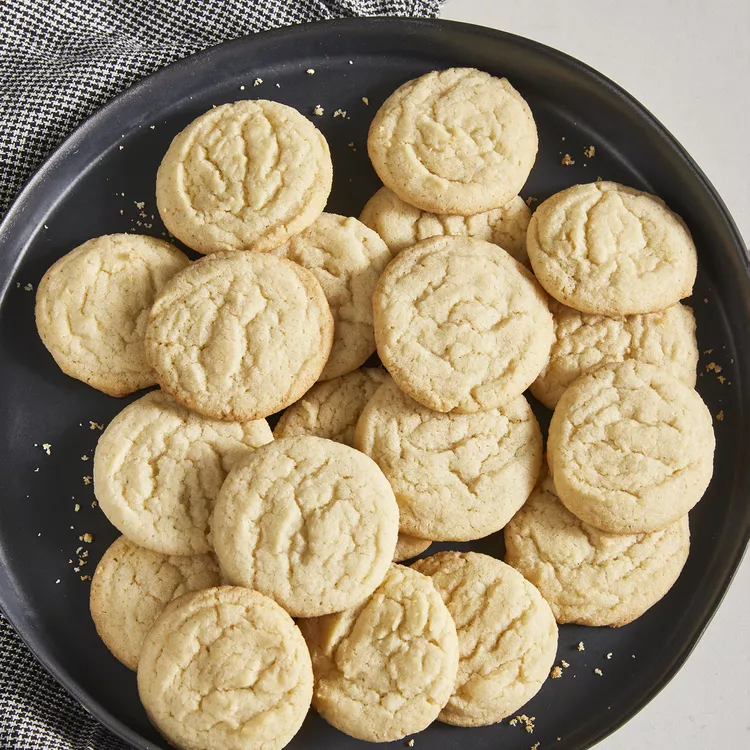
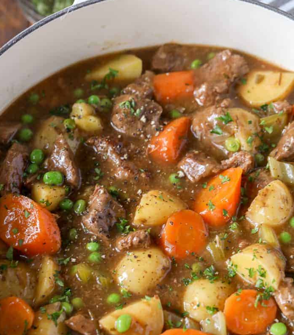

My Favorite Recipes
Honey Muffins
Total Time
30 min
Makes
1 dozen
Author
Grammy Liz
INGREDIENTS
- 2 cups all-purpose flour
- 1/2 cup sugar
- 3 teaspoons baking powder
- 1/2 teaspoon salt
- 1 large egg, room temperature
- 1 cup 2% milk
- 1/4 cup butter, melted
- 1/4 cup honey
DIRECTIONS
-
Preheat oven to 400°. In a large bowl,
combine flour, sugar, baking powder
and salt. In a small bowl, combine egg,
milk, butter and honey. Stir into dry
ingredients just until moistened.
-
Fill greased or paper-lined muffin cups
three-fourths full. Bake until a
toothpick inserted in center comes out
clean, 15-18 minutes. Cool 5 minutes
before removing from pan to a wire rack.
Serve warm.
Sugar Cookies
Total Time
30 min
Makes
4 dozen
Author
Susie Q

INGREDIENTS
- 2 ¾ cups all-purpose flour
- 1 teaspoon baking soda
- ½ teaspoon baking powder
- 1 cup butter, softened
- 1 ½ cups white sugar
- 1 egg
- 1 teaspoon vanilla extract
DIRECTIONS
-
Gather all ingredients. Preheat the oven to 375
degrees F (190 degrees C).
-
Stir flour, baking soda, and baking powder together
in a small bowl.
-
Beat sugar and butter together in a large bowl
with an electric mixer until smooth.
-
Beat in egg and vanilla.
-
Gradually blend in flour mixture.
-
Roll dough into walnut-sized balls and place 2 inches
apart onto ungreased baking sheets.
-
Bake in the preheated oven until edges are golden,
8 to 10 minutes. Cool on the baking sheets briefly before
removing to a wire rack to cool completely.
Beef Stew
Total Time
1 hr 30 min
Makes
8 servings
Author
Holly Nilson

INGREDIENTS
- 2 pounds stewing beef trimmed and cubed
- 3 tablespoons all-purpose flour
- ½ teaspoon garlic powder
- ½ teaspoon salt
- ½ teaspoon black pepper
- 3 tablespoons olive oil more as needed
- 1 onion chopped
- ½ cup red wine optional
- 1 pound potatoes peeled and cubed
- 4 carrots cut into 1 inch pieces
- 4 ribs celery cut into 1 inch pieces
- 1 teaspoon dried rosemary or 1 sprig fresh
- 2 tablespoons cornstarch or as needed
- 2 tablespoons water or as needed
- ¾ cup peas
DIRECTIONS
-
Combine flour, garlic powder, salt, and pepper.
Toss beef in flour mixture.
-
Heat olive oil in a large Dutch oven or pot over medium-high
heat. Shake off any excess flour from the beef and brown in
small batches. Remove and set aside in a bowl.
-
Add the onions to the pot, adding more oil as needed,
and cook until they begin to soften, about 3 minutes.
-
Add beef broth and red wine while scraping up any
brown bits in the pan.
-
Stir in browned beef, potatoes, carrots, celery, tomato paste,
and rosemary. Reduce heat to medium-low, cover, and simmer 1
hour or until beef is tender (up to 90 minutes).
-
Mix equal parts cornstarch and water to create a slurry.
Slowly add the slurry to the boiling stew to reach desired
consistency (you may not need all of the slurry, if you'd
like a thicker stew, you can add extra).
-
Stir in peas and simmer 5-10 minutes before serving.
Season with salt & pepper to taste.